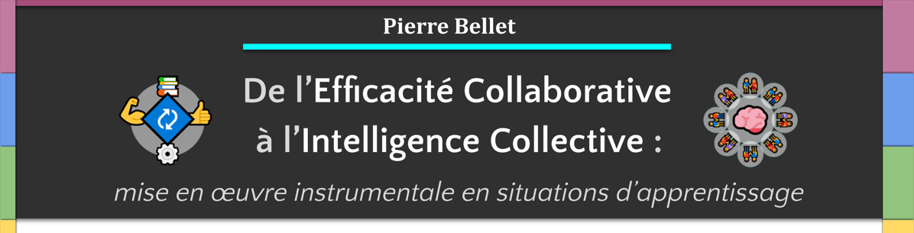

Pierre BELLET
À l'équilibre dans la Recherche, le Développement et l'Innovation des technologies de l'apprentissage
et de l'andragogie en continue.
En recherche d'ingénierie collective et sociale et d'un encadrement de l'artificiel pour et vers un meilleur-vivre humain.
Qualification |
|
|
Nationalité |
|
|
Date de naissance |
|
Attaché temporaire d'enseignement et de recherche |
AMU INSPÉ | |
Docteur en Sciences de l’éducation et de la formation |
CNU 70 | |
|
« De l’efficacité collaborative à l’intelligence collective : mise en œuvre instrumentale en situation d’apprentissage » |
 |
|
| apprentissage efficacité intelligence collective instrumentation EIAH interactions ingénierie technopédagogique artefact SACI travail collaboratif |
|
18-22 |
Doctorat en Sciences de l'éducation et de la formation |
Niveau 8 CEC* |
|---|---|---|
|
16-18 |
Master mention Humanités Numériques
|
Niveau 7 CEC* |
|
2016 |
VAP (validation des acquis professionnels) pour accès M1 |
Niveau 6 CEC* |
|
08-10 |
DN MADE (diplôme national des métiers d'art et du design) mention numérique |
Niveau 5 CEC* |
|
22-23 |
ATER Attaché temporaire d'enseignement et de recherche |
AMU INSPÉ |
|---|---|---|
|
20-21 |
IP Ingénieur Pédagogique sur le projet ILE |
IUTMS |
|
18-21 |
CC Chargé de cours (vacataire)
Expression-Communication
Méthodologie de travail universitaire
Ergonomie cognitive
Conception de documents et d’interfaces numériques
Être chercheur à l’ère du numérique : de nouvelles pratiques
Introduction aux
interfaces homme-machine
suivi de gestion de projet
tuteur de stage
|
UMUPVMULL2 |
|
13-18 |
CP Product Designer (responsable de la conception de produit numérique) |
OG |
|
10-13 |
CT Creative Technologist ( ... ) |
909c |
1️⃣ Activité d’enseignement
Les thématiques sur lesquelles j'ai commencé à enseigner depuis 2018 portent principalement sur les processus psycho-cognitifs liés à l’apprentissage dans le contexte universitaire (autonomie, autorégulation, autodétermination, auto-efficacité…), la conception, l’ergonomie et les IHM, ainsi que des thématiques plus orientées vers la recherche, la méthodologie et les outils numériques pour accompagner le travail des chercheurs, des enseignants et des ingénieurs pédagogiques.
La caractéristique commune de tous les enseignements réalisés est d’être toujours liée à une instrumentation parallèle ou simultanée via une plateforme pédagogique (Spirale, Claroline, Moodle) ayant fait l’objet d’une conception ou reconception sur le scénario avant prise en charge, et ce quel que soit le contexte, présentiel, distanciel ou hybride.
Cette instrumentation numérique parallèle notamment via Moodle, a également permis d’intégrer diverses formes d’activités collaboratives (par groupes, avec auto-évaluation ou hétéro-évaluation) et de plateformes numériques innovantes (Tableaux blanc collaboratifs, Miro, Environnements de Réalité Virtuelle, Mozilla Hubs) pour expérimenter avec de nouvelles modalités pédagogiques et en mesurer les effets au travers des indicateurs de résultats, des variables psychologiques ou de l’analyse de l’activité. Ces observations et résultats d’interventions ou de recherche-action participante, en contexte naturel et écologique ont également contribué à l’innovation pédagogique et à la valorisation par la recherche.
2️⃣ Enseignements
Mes enseignements se sont principalement addressés jusqu'ici à des étudiants de cycle universitaire en Formation Initiale (FI).
DUT/BUT |
Niveau 5 CEC* | |
Licence |
Niveau 6 CEC* | |
Master |
Niveau 7 CEC* | |
Doctorat |
Niveau 8 CEC* |
Ainsi qu’en Formation Continue (FC) sur des interventions plus épisodiques liées à des missions ou échanges de Relations Internationales (RI).
3️⃣ Contributions pédagogiques
Parce que les thématiques sur lesquelles j'ai pu enseigner ne faisaient pas toujours partie de mes connaissances initiales ou de mon domaine d'expertise en termes didactiques, j'ai systématiquement utilisé le temps effectif de travail pour : comprendre et m'approprier les objectifs des enseignements, réactualiser ou produire du contenu et l'intégrer dans une démarche d'ingénierie pédagogique, de formation, voire de recherche lorsqu'il s'agissait de mieux comprendre certains phénomènes liés à l'apprentissage en situation naturelle.
|
22-... |
Designing Skills for FSL Instructors to Develop Interactive OER with H5P | Module 3: Instructional Design for Competency based Learning – York University, Toronto (Canada) | |
|---|---|---|
|
21-23 |
Master NEO | Parcours de Master Ingénierie Pédagogique Numérique – Mention Pratiques d’Ingénierie de Formation – INSPÉ Aix-Marseille. | |
|
19-21 |
Projet ILE – International Laboratory for lEarning – financement ANR & région Occitanie – IUT de Montpellier – Université de Montpellier. |  |
|
18-22 |
Scénarios pédagogiques, cours et activités Moodle : auto-évaluation, approche par compétences et intégration de référentiels de compétences et plans de formation, ludification et badges, activités de communications synchrones, activités de co-conception synchrone sur tableaux blanc partagés, instruments d’évaluation multi-partite, environnements virtuels |
4️⃣ Diffusion, rayonnement
Il est important de justifier les méthodes choisies pour la collecte et l'analyse des données, en montrant pourquoi elles sont les plus appropriées pour répondre à la question de recherche et aux objectifs de la recherche.
|
2019 |
formation en Ingénierie Pédagogique à l’Université Technique de Manabí, Équateur. | |
|---|---|---|
|
2021 |
communication au 8e Colloque international en éducation : « Hybrider l'espace pour développer l'international : le projet ILE. » Enjeux actuels et futurs de la formation et de la profession enseignante, CRIFPE, en ligne, 30 avril 2021 |  |
|
2021 |
participation et communication au MoodleMoot 2021 : « Hybridation des espaces pour s'ouvrir à l'international, le projet ILE », en ligne, 8 juillet 2021 [ MM2021 ] |  |
🏫 Laboratoires d'accueil
Avec pour point d'entrée, dans le monde académique de la recherche, le domaine des HumaNum, la translittératie et l'appel à la recherche transdisciplinaire, la succession dynamique et rythmée des différents laboratoires et activités de recherches que j'ai pu intégrer m'a offert la richesse et la multiplicité d'approches et de pratiques croisées entre les Sciences du Langage, la Psychologie, l'Ergonomie, les Humanités Numériques, l'Informatique et les Sciences de l'éducation et de la formation. et plus largement en Sciences humaines et sociales.
|
18-19 |
PRAXILING En 2018, mon parcours de laboratoire m’a permis d’intégrer l’Équipe 2 du laboratoire PRAXILING (UMR 5267 CNRS) sur les Programme 1 – Éducation et Humanités numériques et Programme 3 – Interactions médiées dont la dominante disciplinaire en sciences du langage et linguistique, s’intéressait alors à l’appréhension du langage en tant que pratiques sociales situées et à l'analyse du discours. |
|
|---|---|---|
|
19-22 |
LHUMAIN En 2019, suite à un changement de laboratoire, j’ai rejoint LHUMAIN (UR Langages HUmanités Média-tions Apprentissages Interactions Numériques) dans l’Équipe « Pratiques interactionnelles sociotechniques : dispositifs numériques et instruments » avec une approche transdisciplinaire davantage orientée sciences de l’éducation et humanités numériques. |
|
|
22-... |
ADEF Depuis 2020, je travaille de près avec le laboratoire ADEF (EA 4671), au travers de plusieurs rapprochements et collaborations avec le Programme ARTEFACT ainsi qu’avec le parcours de Master Ingénierie Pédagogique Numérique (NEO) à distance – INSPÉ d’Aix-Marseille Université. |

🔍 Thématiques de recherche
Mes recherches s’intéressent à l’analyse des traces de l’activité en situations d’apprentissage collectives instrumentées (SACI) ou environnements informatiques pour l'apprentissage humain (EIAH). Il est question d’observer et d’expérimenter en croisant différentes approches méthodologiques, méthodes de conduite de recherche ou recherche par méthodes mixtes pour mieux cerner l’objet, le produit, la résultante de formes d’émergences d’intelligences collectives en situations naturelles. Le numérique s’y inscrit comme vecteur d’un possible recueil de données complémentaires aux approches quantitatives et qualitatives avec une triangulation des données et une approche itérative des situations expérimentales semi-contrôlées, ainsi qu’une orchestration par l’ingénierie pédagogique de dispositifs permettant l’auto-contrôle des données et la recherche scientifique dans des situations et contextes innovants.
« De l’efficacité collaborative à l’intelligence collective : |
|
|
| Délivré par | Université Paul Valéry Montpellier |
|
| Préparée au sein de | École Doctorale N° 58 |
|
| Et de | Unité de Recherche LHUMAIN |
 |
Spécialité |
La thèse a été soutenue le 17 novembre 2022 devant le jury composé de

|
M. Pascal MARQUET PU — Université de Strasbourg |
 |
Président & Rapporteur |
|---|---|---|---|

|
M. Simon COLLIN P — Université du Québec à Montréal |
Rapporteur | |

|
Mme Julie DENOUËL PU — Université Rennes 2 |
Examinatrice | |

|
Mme Maria Antonietta IMPEDOVO PU — Aix-Marseille Université |
 |
Examinatrice |

|
M. Patrice LAISNEY MCF — Aix-Marseille Université |
|
Examinateur |

|
Mme Stéphanie Mailles Viard Metz PU — Aix-Marseille Université |
|
Directrice de thèse |
1️⃣ Projet de thèse
Le projet de recherche autofinancé initié auprès de l'École Doctorale N° 58 (Langues, Littératures, Cultures, Civilisations) en 2018 proposait dès le départ la continuité de mon travail de Mémoire de recherche en Master Humanités Numériques (16-18). Après avoir étudié précisément deux contextes de formations dans le cadre du Mémoire, au travers du spectre de l'efficacité collective et des situations d'activités instrumentées, il s'agissait de poursuivre ces recherches pour viser un objectif d'identification de facteurs susceptibles de contribuer à l'émergence d'intelligence collective (IC).
2️⃣ Questions de recherche & objectif
Formulation d'une attente générale fondée sur un objectif avec pour origine :
- ➔ des définitions multiples des intelligences et des conditions d'émergence à identifier autour de cadres conceptuels et théories qui se complètent ?
- ➔ une mesure délicate au sens de l'approche psychologique et une appréciation de l'IC à opérationnaliser dans des situations plus naturelles et interactionnelles ?
- ➔ un accompagnement possible du développement de l’IC par les technologies et leurs instrumentations ?
L'objectif de la mise en œuvre s'est ainsi traduit par la recherche de moyens, techniques et méthodes pour observer l'émergence de synergies collectives de travail dans des situations d'apprentissage afin de de mieux comprendre le phénomène complexe de l'intelligence collective.
3️⃣ Contributions de la thèse
Au travers du développement successif et itératif de situations et dispositifs en ligne, utilisant les résultats des études précédentes pour améliorer les suivantes et améliorant en continue tant les dispositifs pédagogiques que les méthodes de recueil, de traitement ou d'analyse de données (des statistiques issues de questionnaires à l'analyse des traces de l'interaction jusqu'à leur visualisation par l'analyse de réseaux sociaux), nous avons ainsi pu apporter plusieurs contributions avec ce travail :
- ➔ une échelle basée sur le sentiment d'efficacité (SEP/SEC) de Bandura pour apprécier le sentiment d'intelligence collective (SIC) selon 12 dimensions identifiées
- ➔ le développement et la mise en œuvre d'une méthodologie itérative et mixte dans les contextes numériques et les Sciences de l'éducation et de la formation
- ➔ des pistes de recherche instrumentale (incluant des outils, des méthodes mais aussi des ressources pédagogiques innovantes) pour l'observation et l'étude de phénomènes complexes
4️⃣ Prospectives
À l'issue de ce travail et de sa défense en soutenance, je suis tout d'abord très reconnaissant envers les personnes qui m'ont encadré et évalué, de m'avoir permis de surfer sur les limites des cadres formels et académiques, avec une certaine créativité maîtrisée, dont l'objectif était de faire valoir que le fond doit aller avec la forme et que notre époque suggère la réactualisation des supports que nous utilisons dans la recherche pour présenter des phénomènes aussi complexes que ce que nos possibilités de traitement et d'analyses nous le permettent aujourd'hui. Il y avait une prise de risque, qui m'a été relevée mais aussi et surtout reconnue, m'invitant ainsi à continuer dans ce sens sans pour autant déborder des cadres.
L'une des principales critique constructive que je retiens alors de cette expérience et du retour inestimable de mes pairs, concerne la multiplicité des cadres théoriques et des méthodes convoqués que j'ai tenté de mobiliser sur différents plans d'observations et à diverses échelles, et ce, pas toujours suffisamment explicités ou mises en liens au niveau opérationnel ou contextuel. Cette difficulté de reliance qui semble inhérente à des approches transdisciplinaires convoquant naturellement des connaissances et manières différentes d'aborder ces connaissances, nous aspire à continuer dans ces recherches et pratiques scientifiques orientées vers la complexité et la mise en lumière de l'interelationnalité des théories, pour lesquelles les concepts fondamentaux sont souvent communs et dénominables.
Les publications suivantes, présentées dans un ordre linéaire et chronologique, font état de mon cheminement croisant progressivement les méthodes quantitatives, qualitatives et mixtes dans une méthodologie de recherche axée sur l'étude des environnements numériques d'apprentissage et des traces de l'activité collaborative.
Ces valorisations par la communication suivent également la méthode de conduite de recherche (basée sur THEDRE) qui a pu guider mon travail de doctorat avec l'implémentation et le suivi d'itérations successives et d'amélioration continue des formations comme des environnements propices à l'émergence de formes d'intelligence collective.
|
Bellet, P., Vendeville, N., & Mailles-Viard Metz, S. (2019). Les effets du travail de groupe sur les sentiments d’efficacité personnelle et collective en contexte d’apprentissage. Canadian Journal of Education / Revue Canadienne de l’éducation, 42(4), 992–1021. https://journals.sfu.ca/cje/index.php/cje-rce/article/view/3661/2789
L’étude décrite dans ce texte analyse les résultats d’une expérimentation semi-contrôlée pour évaluer les sentiments d’efficacité personnelle et collective ainsi que les processus d’autorégulation d’étudiants de première année de DUT en informatique pendant un cours pratique de révision d’un langage informatique. Cette expérimentation transdisciplinaire inclut l’usage d’un outil informatique permettant de recueillir des traces de l’apprentissage afin d’effectuer des recherches. J’ai contribué à la mise en œuvre du protocole expérimental, au traitement des données et à la rédaction de ce premier article. |
2019 | |
|
Bellet, P., Vendeville, N., & Mailles-Viard Metz, S. (2019). How Can Collaborative Learning Support Perceived Collective Efficacy? The Bulletin of the Polytechnic Institute of Iași Socio-Humanistic Sciences, 65(1–2), 9–22. https://www.ceeol.com/search/article-detail?id=774244
Ce texte prolonge l’analyse des données issues et l’interprétation des résultats issus du premier article et vise à la mise en lien des natures et volumes d’interactions en lien avec les différentes données auto-rapportées sur les sentiments d’efficacité et l’autorégulation. J’ai contribué à l’exploration avancée des données et les analyses statistiques. L'accompagnement de N. Vendeville a particulièrement contribué à mon initiation aux méthodes quantitatives et aux traitements statistiques. |
2019 | |
|
Bellet, P. et Mailles-Viard Metz, S. (2020). Accompagner l’autonomie dans les apprentissages universitaires. Dans C. Pélissier (dir.), Notion d’aide en éducation (p. 187‑209). ISTE editions.
Ce chapitre est co-écrit avec S. Mailles Viard Metz. Il porte sur l’accompagnement scénarisé de l’autonomie en contexte pour aider les apprenants à se sentir plus efficaces dans leurs apprentissages. Nous nous sommes concentrés pour cela sur une tâche de conception de cartes mentales, vu comme un produit capable de mettre en valeur les qualités d’un environnement d’apprentissage efficient, pensé par soi et pour soi, grâce aux représentations que peuvent s’en faire les étudiants. Outre l’intérêt du sujet sur le comportement étudiant, la méthodologie montre aussi que le numérique permet un nouveau regard sur la nature des données et les potentialités de leur analyse. |
2020 | |
|
Bellet, P., Venant, R., Pélissier, C., Mailles Viard Metz, S. et Broisin, J. (2021). Analyse des processus d’entraide dans le cadre d’un laboratoire virtuel et distant pour l’apprentissage de l’informatique. Sticef, 28(3), 32. https://doi.org/10.23709/sticef.28.3.3
Le texte de cet article reprend in fine les premières contributions des deux articles précédents, en prolongeant les analyses des traces de l’activité pendant l’interaction. Il analyse les comportements des étudiants en situation d'entraide dans le cadre d’un laboratoire virtuel et distant pour l'apprentissage de l'informatique. On a ainsi pu identifier différentes configurations d'entraide, et révéler que les étudiants contribuent de façon homogène aux sessions de chat supportées par un outil de consultation de terminal d'un pair. L’étude montre également que la difficulté et le calibrage de la tâche impacteraient la qualité des sessions d'entraide. C’est une réflexion pluridisciplinaire entre spécialistes en informatique (J. Broisin & R. Venant), sciences du langage (C. Pélissier), sciences de l’éducation, psychologie et ergonomie cognitive (S. Mailles Viard Metz et P. Bellet) qui a été très fructueuse sur la constitution de corpus complexes et l'analyse mixte de données combinées. |
2021 |
L'exercice de Mémoire de recherche en Master est un moment déterminant du parcours étudiant, qui peut potentiellement être l'expérience cruciale qui pourrait donner le goût et l'envie d'aller plus loin dans la recherche et dans l'activité intellectuelle orientée vers les communs. C'est en tous cas l'expérience que j'ai pu avoir dans mon propre parcours, avec un encadrement bienveillant, régulier, rigoureux, méthodique et attentif de la part de ma propre Directrice, tout au long de mes années de Master et de Doctorat. Il est donc tout naturel que je veille à poursuivre dans ce cadre qui m'a été offert, en continuant dans l'œuvre de l'accompagnement d'étudiants dans leur propre autonomie et réussite. La manière dont j'encadre aujourd'hui mes propres étudiants ressemble ainsi à la manière dont j'ai pu en bénificier. Cela inclut notamment :
- calendrier partagé pour gérer, planifier et organiser le temps sur un effort d'endurance en systématisant 1 réunion hebdomadaire ou bi-hebdomadaire tout au plus pour faire des points d'avancement et ajuster la suite, le cas échéant.
- dossier partagé dans les nuages afin de centraliser toutes les informations, documents, ressources, références relatives au projet de recherche (e.g., le manuscrit quel-qu'en-soit-l'état, un carnet de bord comprenant les comptes-rendus succincts de chaque point d'avancée)
- tableau partagé en ligne pour échanger, réorganiser et visualiser avec un plan d'ensemble les différents livrables et supports du projet
Mon positionnement se veut simple, ouvert et transparent : je suis là pour donner des directions, orienter les lectures, guider la démarche, accompagner la méthodologie, lire, relire et aider au raisonnement et à la structuration des pensées pour l'accomplissement et la réussite d'un mémoire de recherche susceptible de candidater à une poursuite, si telle est la volonté du prétendant. Les pré-requis sont : motivation, curiosité, volonté, force de travail. La créativité est un plus fortement appréciable, mais pas forcément incontournable.
Je suis cependant très attentif au fait que cela soit et reste une expérience de formation positive ; en faisant preuve notamment de vigilance et de compréhension quant à la difficulté et l'engagement que nécessite un tel travail et ce, d'autant plus pour les étudiants du Master NEO qui ont à gérer en parallèle d'autres activités professionnelles, pédagogiques et/ou d'une vie personnelle à concilier avec équilibre.
Encadrement de Mémoires en cours [ Master NEO — Promo 1 ]
- 21-… – █████ ███████, Accompagnement par la réalité et les environnement virtuels d'un dispositif pédagogique pour des élèves de second degré en classe de mathématiques.
- 21-… – ████████ ███████ ██ ████, Design et dispositif de formation pour adultes : quels effets sur les apprentissages et l'émotionalité ?
- 21-… – ██████ ████████, Le prototypage numérique pour développer les compétences entrepreneuriales : passer de l’idée au produit lors d’un jeu de rôle pédagogique stimule-t-il l’esprit d’entreprendre ?
Co-encadrement avec Docteure2 Nihal OUHERROU.
De nombreuses occasions de contribuer activement à des projets de recherche croisant l'ensemble de mes compétences se sont présentées à moi ces dernières années et, je m'y suis toujours investi avec dynamisme.
Certains d'entre eux ont pu être mis en liens de manière plus ou moins explicite et réussie avec mon projet de thèse ; d'autres m'ont permis de développer des domaines de compétences et de ressources connexes avec des liens plus implicites, mais toujours présents. En voici quelques-uns.
| 2023 – UNI-T academy : eUropeaN cIvic Teacher Academy, projet retenu par la Commission européenne dans le cadre de l’appel à projet Académies Erasmus+ des enseignants. INSPÉ. (Aix-Marseille) | 2019 | |
| 2020 – ILE : International Laboratory for lEarning, le learning lab de l’IUT de Montpellier-Sète axé sur l’ouverture à l’international. IUT de Montpellier-Sète, Services de Relations Internationales. (Montpellier) | 2019 | |
| 2019 – TEAM : Travailler et apprendre en équipe : comment se sentir plus efficace ? Étude sur la composition d’équipes de travail, la collaboration et l’évaluation par les pairs. PRAXILING & EPSYLON. (Montpellier) | 2020 | |
| 2018 – HUMANCONNECT – Ob.i Lab : Équipement oculométrie & Casque EEG pour expérimentations, projets d’étudiants et start-up (Montpellier) [ web.archive ] | 2021 | |
| 2018 – APOLoNIo : Vérifier des modèles informatiques de l’argumentation par l’expérimentation utilisateur. Collaboration avec CRIL (Lens) & LIRMM (Montpellier) | 2021 | |
| 2018 – MOUV : se Motiver et s’Orienter à l’Université grâce aux environnements Virtuels. Collaboration : PRAXILING, EPSYLON & LIRMM. (Montpellier) | 2021 | |
| 2018 – Lab4CE : « Laboratory for Computer Education ». Projet de laboratoire virtuel et distant pour l’apprentissage de l’informatique. Étude de la solution informatique et des traces générées en lien avec les variables psychologiques soutenant l’efficacité et l’entraide. Collaboration avec l’IRIT (Toulouse) | 2021 |
|
2022 – 🗣️ Séminaire doctoral sur les Affordances et le Nudge, en ligne
Organisation, communication et mise en ligne d’interventions dans le cadre de séminaire doctoral Montpellier / Aix-Marseille. Du concept des affordances (i.e, les possibilités d'actions sur un objet) à la théorie du nudge (i.e, « coup de pouce » pour passer de l'intention à l'action), nous explorons à partir des définitions et exemples généraux, les applications possibles dans les Environnements d'Apprentissages (personnels et/ou collectifs, physiques et/ou virtuels) et au travers des études scientifiques qui s'y intéressent. Collaboration avec Amadou Diop et José Samaniego |
2021 | |
|
2022 – 🗣️ Séminaire doctoral sur les Méthodes Mixtes, en ligne [ youtube ]
Organisation, communication et mise en ligne d’interventions dans le cadre de séminaire doctoral Montpellier / Aix-Marseille. Cette présentation propose dans un premier temps de faire un tour d'horizon des méthodes mixtes, en se basant sur plusieurs modèles théoriques dans ce champ et en s'intéressant particulièrement aux quatre approches possibles selon Creswell & Creswell (2017) : complémentarité, triangulation, explication et exploration. Dans un deuxième temps, nous proposons un atelier visant à illustrer ces approches à travers des exemples concrets empruntés à nos travaux de thèse. Collaboration avec Nicolas de Khovrine, Nihal Ouherrou et José Samaniego |
2021 | |
|
2021 – 🗣️ Atelier outils numériques d’enquête : Tripetto, en ligne [ youtube ]
Présentation et démonstration d’un outil de recueil de données par questionnaire avec une interface aux différents modes de présentation (dialogue, diaporama) pour promouvoir le recueil de données auto-rapportées. Collaboration avec José Samaniego. |
2021 | |
|
2021 – 🗣️ Présentation de travaux en lien avec les sciences de l’éducation et de la formation et le numérique, en ligne [ youtube ]
Présentation de sujets de thèse aux étudiants du Master MEEF de Aix-Marseille Université, sur les outils numériques et l’accompagnement du collaboratif. Collaboration avec Nicolas de Khovrine. |
2021 | |
|
2020 – 🗣️ RJC EIAH, en ligne
Animation d’ateliers collaboratifs sur la méthode de conduite de recherche THEDRE, une méthode d’accompagnement instrumenté de la recherche par la qualité avec la roue de Deming (PDCA) et les sciences de l’artificiel pour la recherche en Environnements Informatiques pour l’Apprentissage Humain. Collaboration avec Nadine Mandran, Mathieu Vermeulen, Estelle Prior. |
2021 | |
|
2019 – 🗣️ EIAH 19, Paris [ actes ]
Contribution à l'Atelier sur la méthode d’approche des interactions liées à l’entraide dans le projet Lab4CE. |
2021 | |
|
2019 – 🗣️ CJC Praxiling, Montpellier [ actes ]
Communication sur l’intelligence collective dans l’axe « Impacts sociétaux des nouveaux processus d’acquisition : construction, co-construction et modélisation des savoirs » |
2021 | |
|
2018 – 👂 École doctorale d'été EthicHum : penser l’Éthique avec les Humanités, Montpellier
Participation au colloque. |
2021 | |
|
2018, 2019 – 🗣️ Journées des ESPE (INSPE) d’Occitanie, Toulouse
Communications sur les projets de recherche Lab4CE, MOUV et TEAM. |
2021 | |
|
2018 – 👂 RUNED 18, Lyon
Participation au colloque Recherches sur les usages du numérique en éducation (RUNED18). C'est notamment à cette occasion que j'ai pu rencontrer un chercheur du Québec (Florent Michelot), qui m'a alors éclairé sur la subtile nuance qu'il peut exister entre la pédagogie et l'andragogie. |
2021 | |
|
2014 – ✊ OGLabs, laboratoire expérimental de nouvelles idées ICI Montreuil (coworking spaces), Montreuil [ web.archive ] |
2021 | |
| 2012 – ✊ EUHackathon, hack4kids, “Safety Track”, Googleplex, European Parliament, Bruxelles (Belgique) [ souvenir ] [ web.archive ] | 2021 |
Résumé des contributions scientifiques
| ACL | ACLN | COS | C-ACTI |
|---|---|---|---|
| 2 | 2 | 2 | 1 |
| C-ACTN | C-COM | AP | TH |
|---|---|---|---|
| 1 | 5 | 1 | 1 |
👅 Langue maternelle
- français
🗣️ Autres langues
| Compréhension orale | Compréhension écrite | Interaction orale | Expression orale en continu | Écrit | |
|---|---|---|---|---|---|
| 🇬🇧 Anglais |
C1 ✦✦✦✦✦✧ |
C2 ✦✦✦✦✦✦ |
C1 ✦✦✦✦✦✧ |
C1 ✦✦✦✦✦✧ |
C2 ✦✦✦✦✦✦ |
| 🇪🇸 Espagnol |
B1 ✦✦✦✧✧✧ |
B1 ✦✦✦✧✧✧ |
A2 ✦✦✧✧✧✧ |
A2 ✦✦✧✧✧✧ |
A1 ✦✧✧✧✧✧ |
🥼 Compétences liées à la recherche
- ➔ capable de définir un objet de recherche
- ➔ définition de stratégie, mobilisation de ressources, évaluation des sources
- ➔ utilisation de technologies adéquates pour constituer des bibliographies, gérer des bases de données, récolter et diffuser l’information
- ➔ qualités d’analyse critique et respect de l’intégrité scientifique
- ➔ aptitudes à rédiger des supports synthétiques sur des objets de recherche complexes (Dossier J.E.I., articles)
💻 Compétences numériques
| Éducation à l’information et aux données | Communication et collaboration | Création de contenus numériques | Sécurité | Résolution de problèmes |
|---|---|---|---|---|
AVANCÉ |
||||
- ➔ compétences avancées sur l’ensemble des systèmes et outils de traitement de l’information et de création numérique
- ➔ aptitudes expertes sur la conception et la production de supports numériques
- ➔ veille et curation proactive permanente pour se tenir à jour des évolutions technologiques et des environnements
(env. 50% du temps effectif de travail) - ➔ processus d'actualisation des connaissances et pratiques pour et par l'innovation, incluant la découverte et l'apprentissage et la mise à jour de nouveaux outils et nouvelles technologies
🔩 Instrumentation numérique
| 🏢 Bureautique | Google (Docs, Slides, Sheets, Forms, Sites, Microsoft Office, LibreOffice, OpenOffice, OnlyOffice, Collabora Online |
|---|---|
| 💬 Communications | Discord, Skype, Zoom, BBB, Jit.si, Signal, Discourse |
| 🤝 Collaborations | Nextcloud, Podio, Slack, Trello, Doodle, Framasoft |
| 🎨 Créations | ✔ Adobe (Creative Cloud), ✔ Krita, ✔ Balsamiq, ✔ MindManager, ✔ Xmind, ✔ Miro, ✔ TiddlyWiki |
| 🎓 Pédagogiques | ✔ Scenari, ✔ Moodle, ✔ SCORM, ✔ xAPI, ✔ H5P, ✔ Storyline |
| 🔬 Recherches | ✔ Mendeley, ✔ Zotero, ✔ Gephi, ✔ R, ✔ Jamovi |
| 🌐 Internets | ✔ Github, ✔ Youtube, ✔ Mattermost, Limesurvey, ✔ Tripetto, Wikipedia ✔ Mozilla Hubs, ✔ Mozilla Spoke … |
| 👨💻 Environments & Languages | Linux, SSH, Docker, Plesk, CPanel, Nextcloud, WordPress, ✔ MediaWiki, Moodle, Discourse, Matomo, *SQL, MariaDB, HTML, XML, CSS, JS, json |
📢 Compétences en communication
- ➔ peut s’adapter à tout type de cible, utilisateur, interlocuteur
- ➔ intérêt pour les langages, interactions et processus attentionnels
- ➔ fonctions de représentations (Délégué : CVL, CA, Personnel, École Doctorale…)
👔 Compétences d’organisation
- ➔ management d’équipes pluridisciplinaires ; motivation, organisation du travail, priorisation, évaluation, évolution
- ➔ maîtrise la mise en place de plateformes numériques adapteés aux objets de recherche ou de travail horizontaux (recherche, développement, encadrement)
Cela n'a pas toujours été simple, mais cela reste très éclairant.
🗽 Engagement citoyen
- ➔ responsabilités représentatives (conseils de classe, de vie lycéenne, d'administration ; délégué unique du personnel, représentant des doctorants de l'ED58)
- ➔ Président de structures associatives
- 2021-... Association de Lien 👽7I3N, Quissac (France)
-
2017-2020
Accueil de Jeunes en Difficultés Psycho-sociale - Lieu de Vie et d'Accueil A.J.D.P, Pompignan (France)
🤹 Autres compétences
- ➔ tuteur d’apprentis en contrat pro et maître de stage (IESA Multimedia, HETIC, Paris)
✔ bon relationnel avec le milieu professionnel privé - ➔ excellentes connaissances des médias numériques et réseaux sociaux sous leurs aspects techniques et fonctionnels
✔ R&D ✔ J.E.I. - ➔ administrateurs (informatique) de multiples plateformes et réseaux (Nextcloud, Moodle, WordPress, Discourse, Discord, … )
- ➔ investi dans l’échange des savoirs
✔ Ars Industrialis, mouvement open source, culture libre, Wikipedien, réseaux spécialisés, …
|
Sur la formation des professionnels de l'enseignement : outre le fait que je baigne dans cet environnement depuis ma reprise d'études en 2016, notamment au sein des ESPÉ puis INSPÉ, ma contribution à de nombreuses formations de tous types et tous publics, et le fait que je sois aujourd'hui convaincu que c'est bien dans l'andragogie que je peux au mieux déployer mes capacités de transfert et d'échanges autour du numérique et des apprentissages ; la création du Master NEO dès 2020 m'a définitivement déterminé à poursuivre dans cette voie.
Quant à la notion de tutorat, des effets-tuteurs et de l'évaluation, elle est au cœur de mon parcours, y compris et en particulier dans les environnements numériques distants pour les adultes et l'enseignement supérieur. Il m'a d'ailleurs souvent été souligné l'ambiguïté d'agir dans l'action et l'intervention en distinguant notamment les casquettes d'enseignant et de chercheur, sans compter celle de l'ingénierie ou d'autres expériences professionnelles antérieures qui semblent pouvoir me permettre de faire la différence entre les différents rôles et positionnements qu'implique chaque fonction. |
|---|
|
Au niveau des enseignements, je tiens à illustrer ma perception de l'interdisciplinarité, l'interculturalité, l'internationalité, le multilinguisme et le pluridisciplinarisme par une approche que je soutiens et défend depuis et avant même mon entrée dans le monde académique : la transdisciplinarité. En effet, de nature plutôt premier degré et retour aux sources, d'où venons-nous, vers où allons-nous, j'ai toujours ressenti de la confusion dans les termes pluri, multi, inter. Ce qu'il se passe dans l'antre de plusieurs, de multiples ou entre est certes intéressant à considérer et reconnaître, mais ce qui m'intéresse davantage se trouve dans ce qui traverse, ce qui échange, ce qui produit ou créé quelque chose de nouveau au-delà des interstices. Sur mon appréhension des langues, voire des langages, je prendrais en particulier l'exemple de l'anglais. Du fait, notamment, de (la pensée) informatique, j'ai appris à lire, comprendre et écrire dans une odyssée qui a commencé aux alentours de 2001… Depuis, cette langue est devenue une langue de travail, de pensée et d'opérationnalisation tout aussi technique que pratique, qui m'a ouvert la porte à de multiples autres formes de langages sans cesse en exploration. J'ai donc une affinité particulière (confirmée dans ce CV) avec cette langue (qui nous dénomine notamment sur le plan européen et international) ainsi que les translinguismes en général. Enfin, un mot sur la pédagogie actionnelle, il s'agit d'une démarche que j'apprécie et développe avec beaucoup d'enthousiasme et de demonstrativité, notamment par le jeu, le jeu-sérieu, le jeu de rôle, les mécaniques de ludification, de reconnaissance, de valorisation. Je reconnais cependant une faiblesse sur la pédagogie actionnelle par le chant, tout en restant curieux et ouvert à toutes les ouvertures créatives sur les disciplines. |
|---|
|
Au niveau de la recherche, le laboratoire ADEF et Aix-Marseille Université sont de très grandes institutions, tant dans le volume des personnes qui y travaillent que dans le rayonnement et la notoriété qui lui sont reconnus en tant que principaux acteurs de la recherche en Sciences de l'éducation et de la formation en France, en Europe et à l'international. Cela impressionne et j'ai déjà l'immense honneur de pouvoir y contribuer en tant qu'ATER. La multiplicité et la transversalité des axes et programmes de recherche de l'UR ADEF me laisse alors penser que je pourrais tout à fait réussir à trouver une place pour contribuer au projet de recherche commun et m'y intégrer complémentairement avec mes problématiques et objets convergents. En terme, de valorisation scientifique, si la période de thèse nous pousse à publier avec une forme de décalage temporel qui peut être déroutante à la longue, j'aspire dorénavant à communiquer en fonction de revues plus ciblées, ouvertes, ainsi qu'en écho avec des appels plus actuels me permettant de renouveler mes pratiques et de continuer à les améliorer.
Enfin, en ce qui concerne l'accompagnement doctoral, ce sera avec beaucoup d'enthousiasme que je m'investirais dans le cadre de l'École Doctorale ED 356, « Cognition, Langage, Éducation ». Les rencontres avec les personnes exceptionnelles qui font de la recherche, en particulier en doctorat, sont de formidables occasions de brasser la diversité intellectuelle. |
|---|
|
|
À la lumière de ce que permet de mettre en valeur ce curriculum vitae, il me semble avoir suivi un certain cheminement depuis les débuts de mes activités ainsi qu'au travers de ma formation continue.
Si je suis très autonome dans le travail et capable d'une certaine force de productivité et d'effort pour accomplir de multiples tâches, il semble pour autant que je manque encore d'expériences visibles sur des prises de responsabilités effectives, au niveau administratif, financier, légal et gestion de projet.
La réalité que je perçois à mon niveau, est que je ne cherche particulièrement ni la visibilité, ni mon intérêt personnel, ce qui peut être contre-productif avec une évolution de carrière institutionnelle.
Quant à ma motivation personnelle dans mon parcours, je crois profondément qu'elle est simplement guidée par les rencontres et les projets qui nous rassemblent. J'aimerai donc projeter la suite de mon évolution professionnelle et du développement continué de mes expertises, notamment sur la création et le montage initiaux de projets, la recherche de financement, la constitution d'équipes, l'encadrement de recherches peut-être davantage centrées ou en liens avec ce que l'on peut entendre de l'intelligence collective, thématique filamentaire au cœur de mes travaux, qui me paraît également d'une importance fondamentale pour nos enjeux sociétaux. Bien évidemment, je continuerai encore à contribuer activement à des projets en cours ou à venir et pour lesquels je suis à même de combiner mes atouts à celles d'autres chercheurs et collaborateurs, dans des projets de recherches communs liés au laboratoire, projets et rencontres futures en perspectives. Quelque soit les projets à venir ou leur niveau de complexité, je conclurais sur le fait que je dispose d'un nombre de qualités qui me permettent de m'intégrer dans tous types d'équipes et de projets.
|
|---|
En somme, la conclusion est la dernière section du document de recherche et doit résumer l'ensemble du travail de recherche, en présentant les résultats clés, les contributions de la recherche, les implications et les recommandations pour la pratique ou pour les recherches futures.